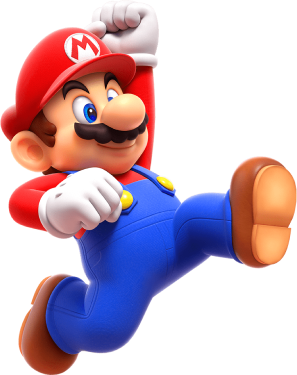

Les Transformations de Mario
Au cours de son aventure Mario va trouver de nombreux objets, voici
une selection non exhauexhaustive de ceux qu’il risque de croiser.
La liste des transformations de Mario est consultable sur
Wikipédia :
ici
.

Super Mario
Lorsque Petit Mario prend un Super Champignon il se transforme en
Super Mario, il peut casser des bloc de briques en sautant et est
protégé d’une attaque ennemie.
Mario de Feu
En prenant une Fleur de Feu, Mario se transforme en Mario de Feu, il
peut alors lancer des boules de feu sur les ennemis afin d’en venir
à bout plus facilement. Il peut en lancer jusqu’à deux à la fois.
S’il prend un dégât, il redeviendra Super Mario.
Mario Éléphant
La pomme éléphant est un fruit venant du Royaume des fleurs, elle
permet de se transformer en éléphant, utilisez votre trompe pour
assommer les énemis ou encore pour aspirer de l’eau et éclabousser
ces derniers...
Mario à Bulles
La fleur à bulles est une très belles fleur aux couleurs rose et
violet. Elle permet à Mario et ses amis de lancer des bulles en les
soufflant avec leur bouche. Celle-ci peuvent emprisonner des ennemis
ou être utilisées comme plateformes temporaires.

Mario Foreuse
Le champignon foreuse est un objet unique en son genre, il
transforme celui qui le prend en lui donnant la capacité de creuser
dans le sol ou les plafonds afin de se déplacer en évitant de
nombreux obstacles.
Mario Arc-en-ciel
En utilisant une Super Étoile, Mario se transforme en arc-en-ciel et
devient invincible pendant un court instant, après ce laps de temps
tout redevient comme avant.
Pouvoirs des Prodiges
La Fleur Prodige est la spécialité du royaume, elle est utilisée par
le prince Florian pour maintenir l’équilibre dans le Royaume ; elle
possède des pouvoirs magiques variés.
Mario Gelée
Un des nombreux effets de la fleur prodige est de transformer Mario
en gelée, sous cette forme il peut se marcher sur les murs et
plafond, il peut aussi traverser des blocs de gelée.